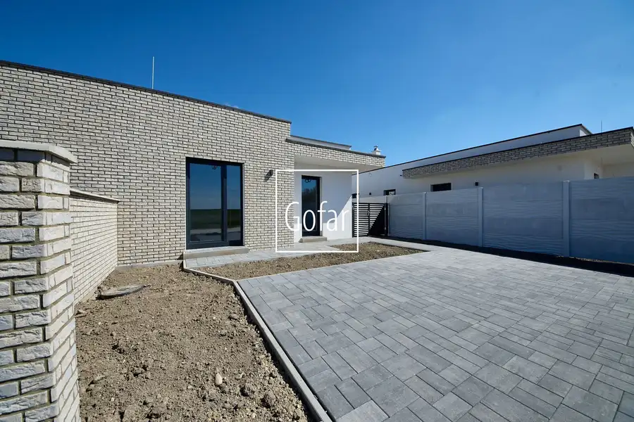
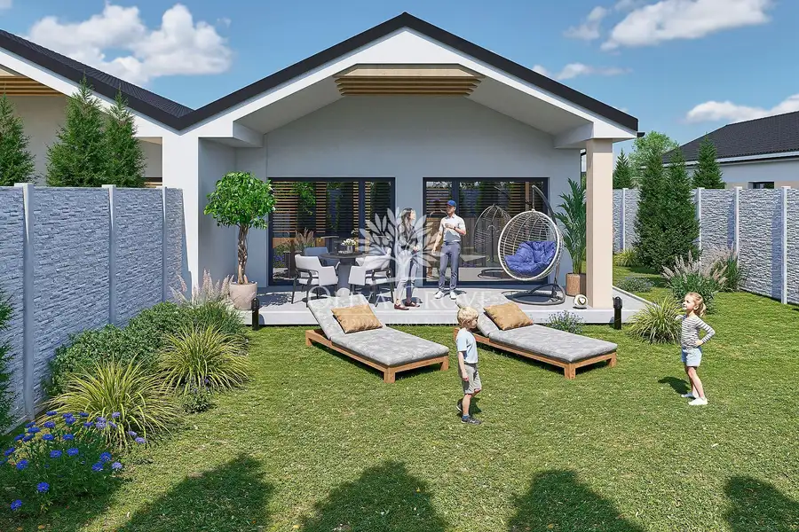

OLIVAGROVE.sk| Priestranný 4-izbový byt (107,6 m²) so záhradou, Horný Bar-DS |Gofar |Exkluzívne
Horný Bar
- Plocha107.59 m²
- StavNovostavba
- VlastníctvoFiremné
O nehnuteľnosti
Realitná kancelária GOFAR ponúka exkluzívne na predaj moderný 4-izbový byt v rodinnom dvojdome s vlastnou záhradou v novej rezidenčnej štvrti OLIVA GROVE v Šuľanoch, miestnej časti obce Horný Bar.Hľadáte bývanie, ktoré ponúka priestor rodinného domu, no zároveň komfort moderného bytu? Práve ste ho našli.Byt s celkovou plochou až 107,59 m², tromi samostatnými spálňami, veľkorysou dennou časťou a krytou terasou s výmerou takmer 18 m² vytvára ideálne miesto pre pokojný rodinný život. K tomu vlastná záhrada, dve parkovacie státia a kvalitné stavebné prevedenie v premyslenom rezidenčnom projekte.OLIVA GROVE nie je len ďalšou novostavbou. Je to moderná rezidenčná štvrť s vlastnou identitou, komunitným parkom, množstvom zelene a olivovníkmi, ktoré vytvárajú jedinečnú atmosféru bývania, akú v okolí Bratislavy len tak nenájdete.Len 25 minút od Bratislavy vzniká miesto pre ľudí, ktorí nechcú robiť kompromisy medzi pokojom prírody a každodenným komfortom. Každá bytová jednotka ponúka vlastnú záhradu, priestrannú krytú terasu, dve parkovacie státia a kvalitné technické prevedenie, ktoré zabezpečí pohodlné bývanie na dlhé roky.OLIVA GROVE je ideálnou voľbou pre rodiny, ktoré hľadajú bezpečné bývanie, dostatok priestoru, moderné technológie a kvalitné prostredie s potenciálom rastu hodnoty nehnuteľnosti.HLAVNÉ VÝHODY• Moderný 4-izbový byt v rodinnom dvojdome s vlastnou záhradou.• Celková plocha až 107,59 m² vrátane veľkej krytej terasy.• Priestranná denná časť s kuchyňou s výmerou 32,60 m².• Tri samostatné spálne poskytujúce komfort celej rodine.• Veľká krytá terasa 17,93 m² ideálna na oddych aj rodinné posedenia.• Samostatné WC, priestranná kúpeľňa, komora aj technická miestnosť.• Dve vlastné parkovacie státia priamo pri byte.• Komunitný park, olivovníky a množstvo zelene priamo v rezidenčnej štvrti.• Pokojná lokalita iba 25 minút od Bratislavy s rýchlym napojením na R7/D4.• Možnosť dokončenia do kvalitného štandardu podľa vlastného výberu.• Kompletný hypotekárny, právny a realitný servis na jednom mieste.• Nadčasová investícia do kvalitného rodinného bývania.DETAILProjekt: OLIVA GROVE – nová rezidenčná štvrťNehnuteľnosť: 4-izbový byt v rodinnom dvojdome TYP 2Lokalita: Šuľany – obec Horný Bar, okres Dunajská StredaStav: novostavbaPočet bytových jednotiek: 2 (časť A a časť B)Počet izieb: 4Úžitková plocha: 89,66 m²Krytá terasa: 17,93 m²Celková plocha: 107,59 m²Počet kúpeľní: 1Samostatné WC: ánoKomora: ánoTechnická miestnosť: ánoParkovanie: 2 vlastné parkovacie státiaPozemok: podľa výberu konkrétnej bytovej jednotkyKompletné oplotenie pozemkuTerasa s pergolouOlivovník pred každým domomVyhotovenie: holodom alebo štandard podľa výberu klienta.DISPOZÍCIAPremyslená dispozícia ponúka všetko, čo moderná rodina potrebuje. Už pri vstupe vás privíta priestranné zádverie so samostatnou toaletou. Srdcom bytu je veľkorysá obývacia izba spojená s kuchyňou a jedálenskou časťou s výstupom na krytú terasu, ktorá prirodzene rozširuje obytný priestor počas väčšiny roka.Nočnú časť tvoria tri samostatné spálne poskytujúce dostatok súkromia pre rodičov aj deti. Komfort bývania dopĺňa priestranná kúpeľňa, komora a samostatná technická miestnosť.Výmery miestností: Vstup – 5,54 m² , Samostatné WC – 1,35 m² , Obývacia izba s kuchyňou – 32,60 m² , Komora – 2,38 m² , Izba – 12,78 m² , Izba – 13,26 m² , Kúpeľňa – 7,60 m² , Technická miestnosť – 1,60 m² , Izba – 12,55 m² , Úžitková plocha: 89,66 m², Krytá terasa: 17,93 m²Celková plocha: 107,59 m².LOKALITAŠuľany, miestna časť obce Horný Bar na Žitnom ostrove, ponúkajú pokojné bývanie v prírode s výbornou dostupnosťou do Bratislavy. Vďaka rýchlemu napojeniu na diaľnicu D4/R7 je Bratislava vzdialená len približne 25 minút, Dunajská Streda 15 km a Šamorín len niekoľko minút jazdy.Lokalita je ideálnou voľbou pre rodiny aj milovníkov aktívneho životného štýlu. V blízkosti sa nachádza Dunajská cyklotrasa EuroVelo 6, vodné dielo Gabčíkovo, Šulianske a Vojčianske jazero, športové centrum X-BIONIC Sphere a obľúbené termálne kúpaliská v Dunajskej Strede a Veľkom Mederi.Šuľany ponúkajú pokojné bývanie obklopené zeleňou, kvalitné životné prostredie a výbornú občiansku vybavenosť – ideálne miesto pre moderný rodinný život.CENA198.800 Eur za holodom. Možnosť dokončenia do štandardu +19.800,-Eur.FINANCOVANIEKúpu je možné financovať aj z hypotekárneho úveru. Služba hypotekárneho špecialistu je úplne zdarma. Gofar je registrovaným finančným sprostredkovateľom v Národnej banke Slovenska.OBHLIADKYObhliadky sú možné aj cez víkend !KONTAKTPredaj:Ing. Ladislav Szabomobil: +421 948 759 382e-mail: ladislav.szabo@gofar.skPredaj a hypotéky:Ing. Estera Szabovámobil: +421 948 244 031e-mail: estera.szabova@gofar.skwww.olivagrove.skwww.gofar.skRealitná kancelária GOFAR je členom Realitnej únie SR a licencovanou realitnou kanceláriou NARKS. Klientom poskytujeme kompletný realitný servis – od profesionálne pripravenej zmluvnej dokumentácie advokátskou kan
Parametre
| Druh | Rodinný dom |
|---|---|
| Dátum zverejnenia | 21. 7. 2026 |
| Energetický certifikát budovy | V príprave |
| Plocha pozemku | 0 m² |
| Počet izieb / miestností | 4 |
| Počet kúpeľní | 1 |
| Počet nadzemných podlaží | 1 |
| Počet spální | 3 |
| Počet vonkajších parkovacích miest | 2 |
| Rok výstavby | 2026 |
| Stav nehnuteľnosti | Novostavba |
| Terás | 1 |
| Terén pozemku | Rovinatý |
| Typ | Predaj |
| Typ konštrukcie | Tehlová |
| Vlastníctvo | Firemné |
| Vybavenie | Terasa, Predzáhradka, Vonkajšie parkovacie miesto, Záhrada |
| Vybavenie objektu | Holopriestor |
| Zastavaná plocha | 115 m² |
| Úžitková plocha | 107.59 m² |
Kde to je


Mohlo by Vás zaujímať

DomNové10 209 000 €GOFAR| Moderná novostavba 4iRD+krb+terasa+záhrada+2xparking Horný Bar (DS) |Exkluzívne Lehnice 117 m² Realitná kancelária GOFAR ponúka exkluzívne na predaj štýlovú novostavbu 4i rodinného domu v tichej časti obce Horný Bar so skvelou dispozíciou,… DomNové10
209 000 €GOFAR| Moderná novostavba 4iRD+krb+terasa+záhrada+2xparking Horný Bar (DS) |Exkluzívne
Horný Bar
117 m²
Realitná kancelária GOFAR ponúka exkluzívne na predaj štýlovú novostavbu 4i rodinného domu v tichej časti obce Horný Bar so skvelou dispozíciou,…
DomNové10
209 000 €GOFAR| Moderná novostavba 4iRD+krb+terasa+záhrada+2xparking Horný Bar (DS) |Exkluzívne
Horný Bar
117 m²
Realitná kancelária GOFAR ponúka exkluzívne na predaj štýlovú novostavbu 4i rodinného domu v tichej časti obce Horný Bar so skvelou dispozíciou,…

DomNové10 185 800 €OLIVAGROVE.sk | 3i RD s vlastnou záhradou - jedinečné bývanie len 25 min od Bratislavy, Horný Bar-DS |Gofar |Exkluzívne Horný Bar 82.79 m² Realitná kancelária GOFAR ponúka exkluzívne na predaj moderný 3-izbový rodinný dom s vlastnou záhradou v novej rezidenčnej štvrti OLIVA GROVE v…